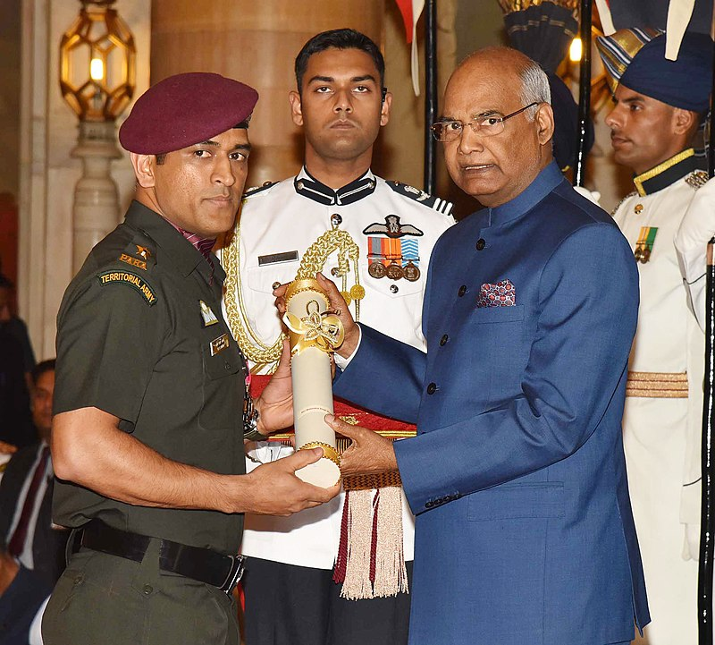

Mahendra Singh Dhoni (born 7 July 1981), was a former international cricketer who plays as a
wicketkeeper
and a right-handed middle order batsman.
His power hitting ability made his reputation as a finisher. He
is
widely considered as one of the greatest white ball cricket captain ever. He captained the Indian
national cricket team in limited-overs formats from 2007 to 2017 and in Test cricket from 2008 to 2014.
He
led the team to three ICC titles (2007 ICC World Twenty20, 2011 ICC Cricket World Cup and 2013 ICC
Champions
Trophy) and brought the Indian cricket team to number one position in ICC test rankings in 2009. He is
current captain of Chennai super king in IPL. He also led CSK to win the 2010, 2011, 2018 and 2021
editions
of IPL.
